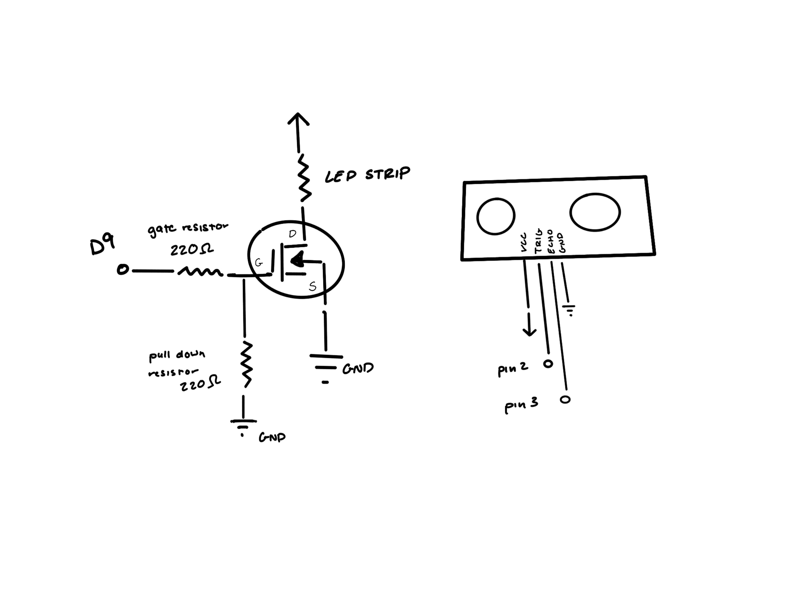
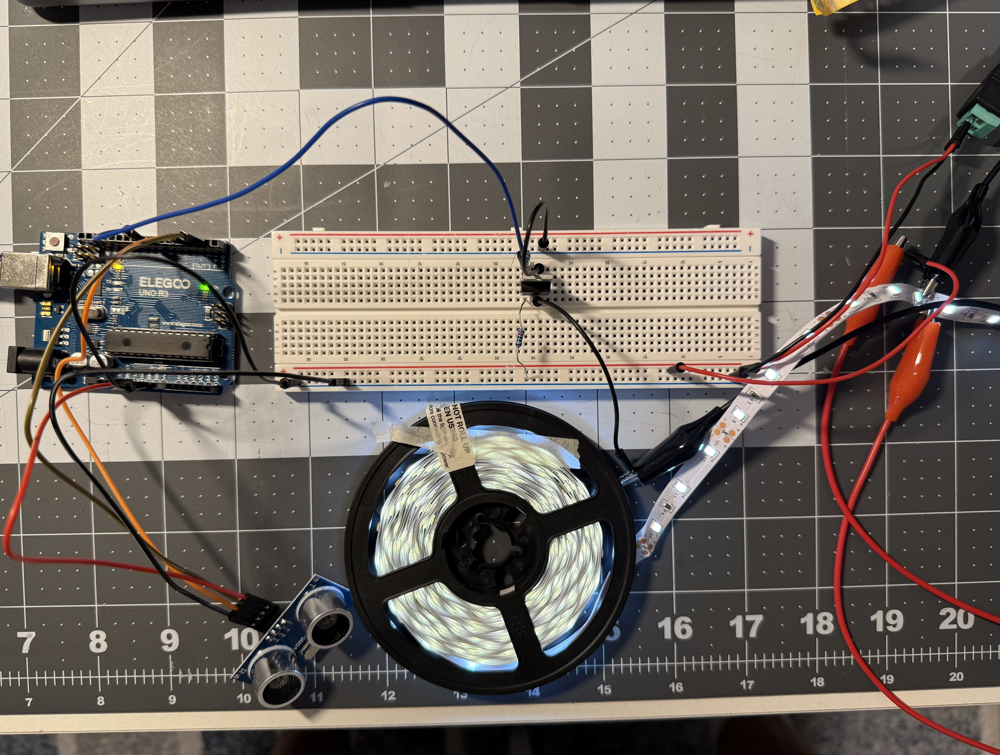
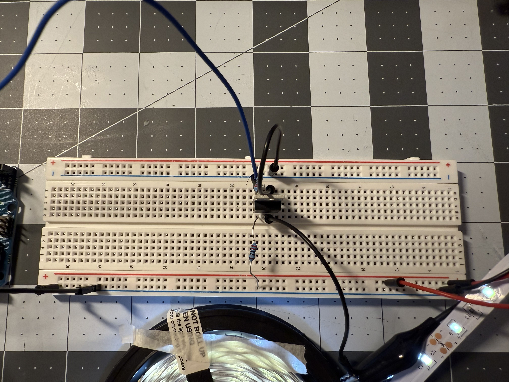

For my A5 circuit operation, I have not yet tested it due to Arduino complications.

The schematic for this circuit shows how the components are connected. The MOSFET transistor is used to control the power supplied to the LED strip load. Additionally there is gate resistor and a pull-down resistor to ensure proper operation of the MOSFET. The ultrasonic sensor is connected to pins 2 and 3 for trig and echo respectively.


The physical circuit ensures that all components are properly connected as per the schematic.
#include //initalize ultrasonic sensor library
#define TRIG_PIN 2 //set ultrasonic trig pin
#define ECHO_PIN 3 //set ultrasonic echo pin
#define MAX_DISTANCE 100 //max distance (cm)
#define LED_PIN 9 //LED output pin controlled by MO
NewPing sonar(TRIG_PIN, ECHO_PIN, MAX_DISTANCE); //create NewPing object
void setup() {
pinMode(LED_PIN, OUTPUT); //set MOSFET gate output
Serial.begin(9600); //begin serial comms
}
void loop() {
delay(50); //small delay between readings
unsigned int distance = sonar.ping_cm(); // get distance in cm
Serial.println(distance); //print distance
if (distance > 0 && distance < 199) { //check measured distance
int brightness = map(distance, 0, 100, 255, 0); //map distance, closer → brighter
analogWrite(LED_PIN, brightness); //adjust brightness
} else {
analogWrite(LED_PIN, 0); //turn off if out of range
}
}
This code receives and decodes the ultrasonic sensor data to determine the distance to an object. It then maps that distance to a brightness level for the LED strip, controlling it via the MOSFET transistor.
1. The absolute maximum amount of current between pins 2 and 3 of a n-mosfet transistor is 37.2A per the datasheet.
2.
3.